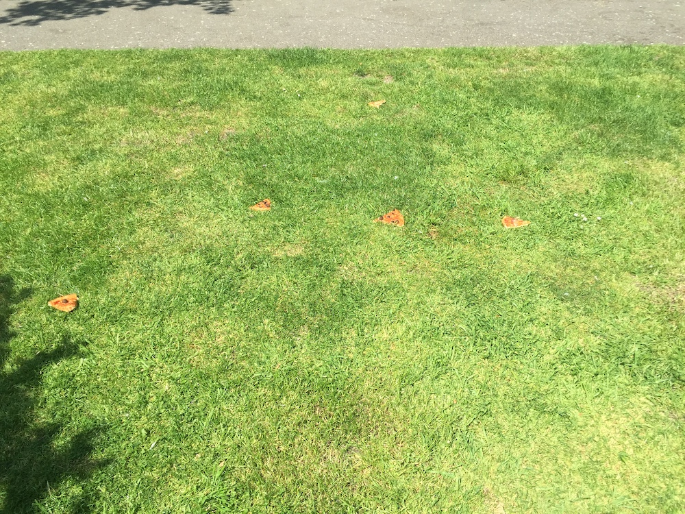

There they lay, strewn about, dead to the world and to themselves. Uncared for, discarded, yet at one time not long before this picture was taken, delicious. This was no accident. Or was it? What follows is a dive into the data to find out just would make someone reject pizza, dear, eternally comforting pizza, in such a heinous manner.
Summer, 2018
Approximately 12:15 (GMT 0)
51°32'59.4"N 0°03'14.0"W
51.549819, -0.053883
It all started simply enough, walking through a park in East London and coming across what looked to be an entire circular-shaped pizza strewn, thrown really, madly about an approximately ten square meter space.
Steve was likely his name. He was likely christened Stephen in his hometown of Derby in the English Midlands. He was likely 32 and surly lately. He had lived in London up until that point for six years which is the point at which the dross of the fetid city begins to eat at your bones. There are few healthy responses to this. Steve chose the likeliest and most common response, despair, dread and inhuman amounts of lager.
One fine summer day it came to a head.
As we can see from the data, Steve had quite a start to the day. The night before was a leaving do for a colleague John at work that he hated. It was cause to celebrate, yet he was consumed with regret and self-hatred.This particular data set is fascinating. What we see is an almost even five-way split in Steve's psyche of factors (regrets, dissappointments and frustration), all of which are suspected to have contributed to the projecting said compound factors on the pizza.
Steve hated onions. It was that simple. It really is. However, the first scenario doesn't really address first principles potentialaties.